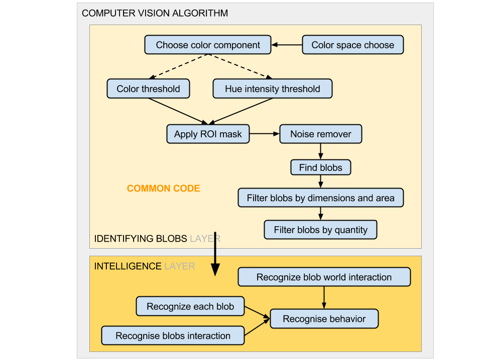

Modular Computer Vision library¶
The library implement simple computer vision filters that can be attached or detached according to the image conditions without screwing the CV algorithm.
It follows the next principle:
The filters that pass the information information for the algorithm are in an independent layer, so they can be replaced without significant changes in the code.
How it works:¶
1 2 3 4 5 6 7 8 9 10 11 12 13 14 15 16 17 18 19 20 21 22 23 24 25 26 27 28 29 30 31 32 | #Import all filter classes
from OTPAdaptativeThreshold import OTPAdaptativeThreshold
from OTPBlur import OTPBlur
from OTPMaskImage import OTPMaskImage
from OTPFindBlobs import OTPFindBlobs
from OTPSelectBiggerBlobs import OTPSelectBiggerBlobs
class OTPModuleGroup(OTPSelectBiggerBlobs,OTPFindBlobs,OTPMaskImage,OTPBlur,OTPAdaptativeThreshold):
"""Group all classes responsibles for the filters"""
def __init__(self, **kwargs):
"""Init all parents classes"""
super(OTPModuleGroup, self).__init__(**kwargs)
#CLASS PARAMETERS ...#
if __name__ == "__main__": #Check if the file is being executed directly
import cv2
capture = cv2.VideoCapture("videofilename.avi") #Open the video file
module = OTPModuleGroup() #Init the class that implement all the filters
while True:
res, frame = capture.read() #read frame
if not res: break;
blobs = module.process(frame) #Apply the filters to the image and return the blobs
for b in blobs: b.draw(frame) #Draw the blobs contours
cv2.imshow("Capture", frame) #Show the image
key = cv2.waitKey(1) #Wait for a key
if key == ord('q'): break
|
Now we will change the code to detect the rats head and tail positions. ...
1 | class OTPModuleGroup(OTPBlobExtremePoints, OTPSelectBiggerBlobs, OTPFindBlobs, OTPMaskImage, OTPBlur, OTPAdaptativeThreshold):
|
... Just by making OTPModuleGroup inheriting from OTPBlobExtremePoints we will have this result:

With the addition of only one word we were able to add a new functionality to our code...